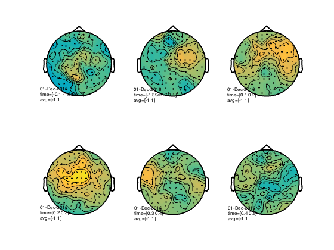

MEEG time-lock searchlight
This example shows MVPA analyses performed on MEEG data.
The input dataset involved a paradigm with electrical median nerve stimulation for durations of 2s at 20Hz.
Using a time-channel neighborhood, a searchlight map is computed indicating in time and space (channel) the pre-stimulation period can be distinguished from the peri/post stimulation period.
The code presented here can be adapted for other MEEG analyses, but there are a few potential caveats: * assignment of targets (labels of conditions) is based here on stimulation periods versus pre-stimulation periods. In typical analyses the targets should be based on different trial conditions, for example as set a FieldTrip .trialinfo field. * assignment of chunks (parts of the data that are assumed to be independent) is based on a trial-by-trial basis. For cross-validation, the number of chunks is reduced to two to speed up the analysis. * the current examples do not perform baseline corrections or signal normalizations, which may reduce discriminatory power.
Note: running this code requires FieldTrip.
- For CoSMoMVPA's copyright information and license terms, #
- see the COPYING file distributed with CoSMoMVPA. #
Contents
get timelock data in CoSMoMVPA format
% set configuration config=cosmo_config(); data_path=fullfile(config.tutorial_data_path,'meg_20hz'); % show dataset information readme_fn=fullfile(data_path,'README'); cosmo_type(readme_fn); % reset citation list cosmo_check_external('-tic'); % load data data_fn=fullfile(data_path,'subj102_B01_20Hz_timelock.mat'); data_tl=load(data_fn); % convert to cosmomvpa struct ds_tl=cosmo_meeg_dataset(data_tl); % set the target (trial condition) ds_tl.sa.targets=ds_tl.sa.trialinfo(:,1); % 1=pre, 2=post % set the chunks (independent measurements) % in this dataset, the first half of the samples (in order) % are the post-trials; % the second half the pre-trials ds_tl.sa.chunks=[(1:145) (1:145)]'; % in addition give a label to each trial index2label={'pre','post'}; % 1=pre, 2=peri/post ds_tl.sa.labels=cellfun(@(x)index2label(x),num2cell(ds_tl.sa.targets)); % just to check everything is ok cosmo_check_dataset(ds_tl); % get rid of features with at least one NaN value across samples fa_nan_mask=sum(isnan(ds_tl.samples),1)>0; fprintf('%d / %d features have NaN\n', ... sum(fa_nan_mask), numel(fa_nan_mask)); ds_tl=cosmo_slice(ds_tl, ~fa_nan_mask, 2);
Summary
-------
MEG data in raw, time-locked and time-frequency formats.
Contents
--------
- subj102_B01_20Hz.fif raw MEG recording
- preproc.m Matlab preprocessing script (based on
FieldTrip)
- subj102_B01_20Hz_timefreq.mat Time-locked data (generated by preproc.m)
- subj102_B01_20Hz_timelock.mat Time-frequency data (generated by preproc.m)
- LICENSE License file
- README This file
Methods
-------
The dataset involved a paradigm with electrical median nerve stimulation with a
human participant for durations of 2s at 20Hz. Data was acquired at 1khz using
a neuromag306 system.
Trial info in the .mat files: 1=pre-stimulus, 2=peri/post-stimulus
License
-------
The contents are made available by Nathan Weisz <nathanweisz |at| me.com> and
Gianpaolo Demarchi <gianpaolo.demarchi |at| unitn.it> under the Creative
Commons CC0 1.0 Universal Public Domain Dedication ("CC0"). See the LICENSE
file for details, or visit
http://creativecommons.org/publicdomain/zero/1.0/deed.en.
Acknowledgements
----------------
Thanks to Nathan Weisz and Gianpaolo Demarchi for providing this dataset, and
an anonymous participant for volunteering during the recordings.
Contact
-------
Nikolaas N. Oosterhof <nikolaas.oosterhof |at| unitn.it>
0 / 60600 features have NaN
set MVPA parameters
fprintf('The input has feature dimensions %s\n', ... cosmo_strjoin(ds_tl.a.fdim.labels,', ')); % set chunks % again for speed just two chunks % (targets were already set above) nchunks=2; ds_tl.sa.chunks=cosmo_chunkize(ds_tl, nchunks); % define neighborhood parameters for each dimension % channel neighborhood uses meg_combined_from_planar, which means that the % input are planar channels but the output has combined-planar channels. % to use the magnetometers, use 'meg_axial' chan_type='meg_combined_from_planar'; chan_count=10; % use 10 channel locations (relative to the combined % planar channels) % as we use meg_combined_from_planar there are % 20 channels in each searchlight because % gradiometers are paired time_radius=2; % 2*2+1=5 time bines % define the neighborhood for each dimensions chan_nbrhood=cosmo_meeg_chan_neighborhood(ds_tl, 'count', chan_count, ... 'chantype', chan_type); time_nbrhood=cosmo_interval_neighborhood(ds_tl,'time',... 'radius',time_radius); % cross neighborhoods for chan-time searchlight nbrhood=cosmo_cross_neighborhood(ds_tl,{chan_nbrhood,... time_nbrhood}); % print some info nbrhood_nfeatures=cellfun(@numel,nbrhood.neighbors); fprintf('Features have on average %.1f +/- %.1f neighbors\n', ... mean(nbrhood_nfeatures), std(nbrhood_nfeatures)); % only keep features with at least 10 neighbors center_ids=find(nbrhood_nfeatures>10); % for illustration purposes use the split-half measure because it is % relatively fast - but clasifiers can also be used measure=@cosmo_correlation_measure; % split-half, as there are just two chunks % (when using a classifier, do not use 'half' but the number of chunks to % leave out for testing, e.g. 1). measure_args=struct(); measure_args.partitions=cosmo_nchoosek_partitioner(ds_tl,'half');
The input has feature dimensions chan, time +00:00:02 [####################] -00:00:00 crossing neighborhoods Features have on average 98.3 +/- 4.9 neighbors
run searchlight
sl_tl_ds=cosmo_searchlight(ds_tl,nbrhood,measure,measure_args,... 'center_ids',center_ids);
+00:00:28 [####################] -00:00:00
visualize timeseries results
% deduce layout from output layout=cosmo_meeg_find_layout(sl_tl_ds); fprintf('The output uses layout %s\n', layout.name); % map to FT struct for visualization sl_tl_ft=cosmo_map2meeg(sl_tl_ds); figure(); cfg = []; cfg.interactive = 'yes'; cfg.zlim=[-1 1]; cfg.layout = layout; % show figure with plots for each sensor ft_multiplotER(cfg, sl_tl_ft);
The output uses layout neuromag306cmb.lay the call to "ft_selectdata" took 0 seconds and required the additional allocation of an estimated 1 MB the call to "ft_prepare_layout" took 0 seconds and required the additional allocation of an estimated 0 MB the call to "ft_multiplotER" took 2 seconds and required the additional allocation of an estimated 4 MB

visualize topology results
show figure with topology for 0 to 600ms after stimulus onset in bins of 100 ms
figure(); cfg.xlim=-0.1:0.1:0.5; ft_topoplotER(cfg, sl_tl_ft);
the call to "ft_prepare_layout" took 0 seconds and required the additional allocation of an estimated 0 MB the call to "ft_prepare_layout" took 0 seconds and required the additional allocation of an estimated 0 MB the call to "ft_topoplotTFR" took 0 seconds and required the additional allocation of an estimated 4 MB the call to "ft_prepare_layout" took 0 seconds and required the additional allocation of an estimated 0 MB the call to "ft_topoplotTFR" took 0 seconds and required the additional allocation of an estimated 0 MB the call to "ft_prepare_layout" took 0 seconds and required the additional allocation of an estimated 0 MB the call to "ft_topoplotTFR" took 0 seconds and required the additional allocation of an estimated 0 MB the call to "ft_prepare_layout" took 0 seconds and required the additional allocation of an estimated 0 MB the call to "ft_topoplotTFR" took 0 seconds and required the additional allocation of an estimated 0 MB the call to "ft_prepare_layout" took 0 seconds and required the additional allocation of an estimated 0 MB the call to "ft_topoplotTFR" took 0 seconds and required the additional allocation of an estimated 0 MB the call to "ft_prepare_layout" took 0 seconds and required the additional allocation of an estimated 0 MB the call to "ft_topoplotTFR" took 1 seconds and required the additional allocation of an estimated 0 MB the call to "ft_topoplotER" took 3 seconds and required the additional allocation of an estimated 5 MB
Show citation information
cosmo_check_external('-cite');
If you use CoSMoMVPA and/or some other toolboxes for a publication, please cite: R. Oostenveld, P. Fries, E. Maris, J.-M. Schoffelen (2011). FieldTrip: Open Source Software for Advanced Analysis of MEG, EEG, and Invasive Electrophysiological Data, Computational Intelligence and Neuroscience, vol. 2011, Article ID 156869, 9 pages.doi:10.1155/2011/156869. FieldTrip toolbox available online from http://fieldtrip.fcdonders.nl N. N. Oosterhof, A. C. Connolly, J. V. Haxby (2016). CoSMoMVPA: multi-modal multivariate pattern analysis of neuroimaging data in Matlab / GNU Octave. Frontiers in Neuroinformatics, doi:10.3389/fninf.2016.00027.. CoSMoMVPA toolbox available online from http://cosmomvpa.org The Mathworks, Natick, MA, United States. Matlab 8.5.0.197613 (R2015a) (February 12, 2015). available online from http://www.mathworks.com